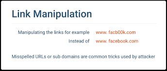
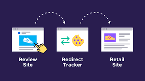
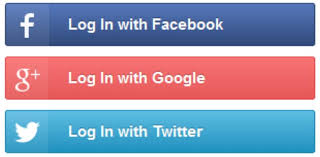
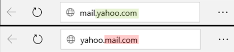
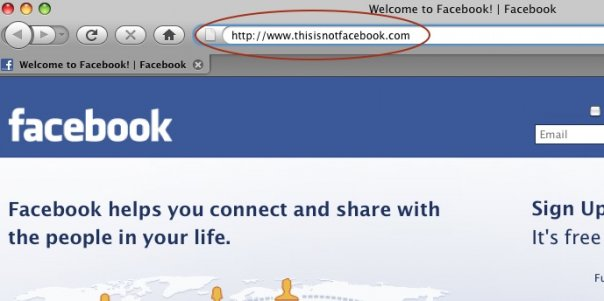
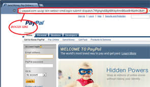

Techniques used in Phishing attacks
- Link Manipulation
- Link Manipulation involves attackers changing the URLs of the phishing websites in a way that might look to be authentic to the user but would direct them to the malicious website.


- Covert Redirect
- This technique is a more sophisticated form of a phishing attack. Here, the user is directed to the correct URL of the website, but the site is corrupted by the attacker in a way that a malicious pop-up appears on opening the site which asks
the user to enter their login credentials.


- Website Forgery
- This technique involves the attackers altering the address bar of a website with the help of some flaws in the website structure to display a legtimate URL, though the actual URL is a malicious one.


- Social Engineering
- This technique involves attackers taking advantage of the situation wherein the user accidently clicks certain malicious links or ads while surfing a website or they encourage the users to do so through some practices thus getting the user
to be redirected to the malicious website.